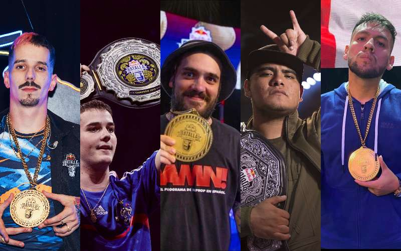

Considerada la competencia de Freestyle más reconocida que reúne a los MCs ganadores de las competiciones organizadas por Red Bull en cada país, enfrentándose en una sede determinada. Para competir es necesario tener 16 años o cumplirlos ese mismo año y como eslogan posee la frase (Muchos hablan, pocos riman, solo los mejores improvisan).
La sede de Red Bull es rotatoria ya que cambia de lugar cada año: Puerto Rico en 2005, Colombia en 2006, Venezuela en 2007, México en 2008, España en 2009, Argentina en 2013, España en 2014, Chile en 2015, Perú en 2016, México en 2017, Argentina en 2018, España en 2019 y República Dominicana en 2020
Actual campeón de la Red Bull Internacional 2020 es Rapder (México).